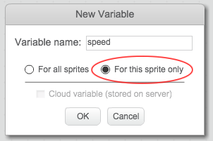
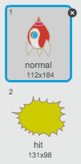

Let’s make a spaceship, that will defend the Earth!
Activity Checklist
Start a new Scratch project, and delete the cat sprite so that your project is empty. You can find the online Scratch editor at jumpto.cc/scratch-new.
Add the ‘stars’ backdrop and the ‘spaceship’ sprite to your project. Shrink the spaceship and move it near the bottom of the screen.
screenshot
Add code to move your spaceship to the left when the left arrow key is pressed. You’ll need to use these blocks:
forever
if <key [left arrow v] pressed?> then
change x by (-4)
end
end
Add code to move your spaceship to the right when the right arrow key is pressed.
Test your project to see whether you can control your spaceship with the arrow keys.
Save your project
Step 2: Lightning bolts
Let’s give the spaceship the ability to fire lightning bolts!
Activity Checklist
Add the ‘Lightning’ sprite from the Scratch library. Click the sprite’s costume and turn the lightning upside-down.
screenshot
When the game is started, the lightning should be hidden until the spaceship fires its laser cannons.
when flag clicked
hide
Add the following code to the spaceship to create a new lightning bolt whenever the space key is pressed.
when flag clicked
forever
if <key [space v] pressed?> then
create clone of [Lightning v]
end
end
Whenever a new clone is created, it should start in the same place as the spaceship, and then move up the stage until it touches the edge. Add the following code to the Lightning sprite:
when I start as a clone
go to [Spaceship v]
show
repeat until <touching [edge v] ?>
change y by (10)
end
delete this clone
Note: We move the new clone to the spaceship while it is still hidden, before then showing it. This just looks nicer.
Test your lightning, by pressing the space key.
Save your project
Challenge: Fixing the lightning
What happens if you keep the space key held down? Can you use a wait block to fix this?
Save your project
Step 3: Flying Space-hippos
Let’s add lots of flying hippos that are trying to destroy your spaceship.
Activity Checklist
Create a new sprite from the ‘Hippo1’ image in the Scratch library.
screenshot
Set its rotation style to be left-right only, and add the following code to hide the sprite when the game starts:
when flag clicked
hide
Create a new variable called speed, that is for the hippo sprite only.
screenshot
You’ll know if you’ve done this correctly because the variable will have the name of the sprite next to it, like this:
screenshot
The following code will create a new hippo every few seconds. The Stage is a good place for this code to live:
when flag clicked
forever
wait (pick random (2) to (4)) secs
create clone of [Hippo1 v]
end
When each hippo clone starts, make it move around the stage (at a random speed) until it gets hit by the lightning. Add this code to the hippo sprite:
when I start as a clone
set [speed v] to (pick random (2) to (4))
go to x: (pick random (-220) to (220)) y: (150)
show
repeat until <touching [lightning v] ?>
move (speed) steps
turn right (pick random (-10) to (10)) degrees
if on edge, bounce
end
delete this clone
Test out your hippo code. You should see a new hippo clone appear every few seconds, each moving at its own speed.
screenshot
Test your laser cannon. If you hit a hippo, does it vanish?
When a hippo touches your spaceship, we need to make the spaceship explode! To do this, first make sure that your spaceship has 2 costumes called ‘normal’ and ‘hit’.
screenshot
The spaceship’s ‘hit’ costume can be made by importing the ‘Sun’ image from the Scratch library, and using the ‘Color a shape’ tool to change its colour.
screenshot
Add this code to your spaceship, so that it switches costume whenever it collides with a flying hippo:
when flag clicked
forever
switch costume to [normal v]
wait until <touching [Hippo1 v]>?
switch costume to [hit v]
broadcast [hit v]
wait (1) secs
end
Did you notice that you have broadcast a ‘hit’ message in the code above? You can use this message to make all of the hippos disappear when the spaceship is hit.
Add this code to your hippo:
when I receive [hit v]
delete this clone
Test out this code by starting a new game and colliding with a hippo.
screenshot
Save your project
Challenge: Lives and Score
Can you add a lives, score or even a highscore to your game? You can use the ‘Catch the Dots’ project to help you.
Save your project
Step 4: Fruit Bats!
Let’s make a fruit bat, that throws oranges at your spaceship.
Activity Checklist
Firstly, make a new bat sprite that will move across the top of the stage forever. Remember to test out your code.
screenshot
If you look at the bat’s costumes, you’ll see that it already has 2:
screenshot
Use the next costume block to make the bat flap its wings as it moves.
Create a new ‘Orange’ sprite from the Scratch library
screenshot
Add code to your bat, so that it creates a new orange clone every few seconds.
when flag clicked
forever
wait (pick random (5) to (10)) secs
create clone of [Orange v]
end
Click on your orange sprite, and add this code to make each orange clone drop down the stage from the bat towards the spaceship:
when flag clicked
hide
when I start as a clone
go to [Bat1 v]
show
repeat until <touching [edge v]?
change y by (-4)
end
delete this clone
when I receive [hit v]
delete this clone
In your spaceship sprite, you’ll need to modify your code so that you are hit if you touch a hippo or an orange:
wait until < <touching [Hippo1 v]?> or <touching [Orange v]?>>
Test your game. What happens if you get hit by a falling orange?
Save your project
Step 5: Game over
Let’s add a ‘game over’ message at the end of the game.
Activity Checklist
If you haven’t already, create a new variable called lives. Your spaceship should start with 3 lives, and lose a life whenever it collides with an enemy. Your game should also stop when you run out of lives. If you need help, you can use the ‘Catch the Dots’ project to help you.
Draw a new sprite called ‘Game Over’, using the text tool.
screenshot
On your stage, broadcast a game over message just before the game ends.
broadcast [game over v] and wait
Add this code to your ‘Game Over’ sprite, so that the message shows at the end of the game:
when flag clicked
hide
when I receive [game over v]
show
Because you’ve used a broadcast [game over] and wait block on your stage, it will wait for the ‘Game Over’ sprite to be displayed before ending the game.
Test your game. How many points can you score? Can you think of ways to improve your game if it is too easy or too hard?
Save your project
Challenge: Improve your game
What improvements can you make to your game? Here are some ideas: + Add health packs that you can collect to gain extra lives;
screenshot
Add floating rocks that your spaceship must avoid;
screenshot
Make more enemies appear when your score gets to 100.
wait until <(score) = [100]>
Save your project
Hi there!
Seems like this is your first time here. Would you like a tour?